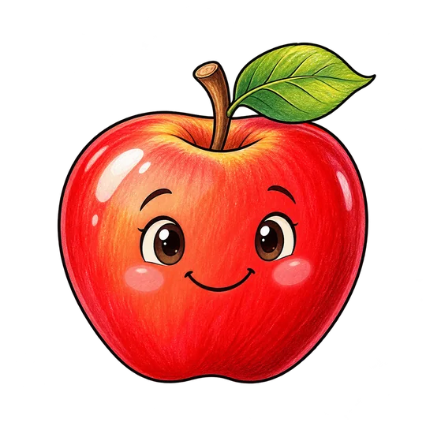
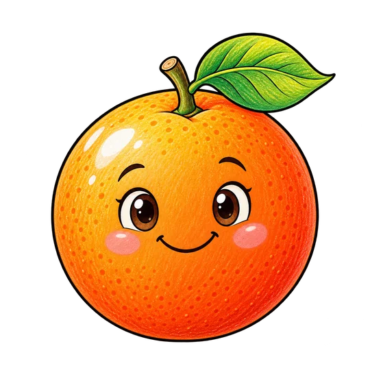
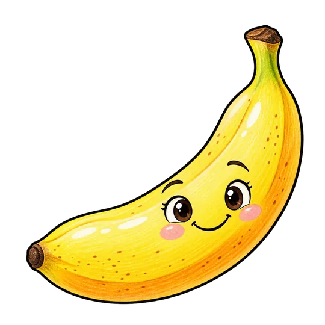
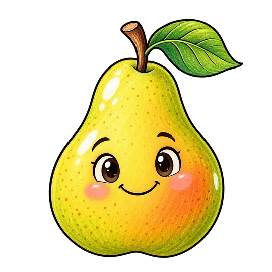
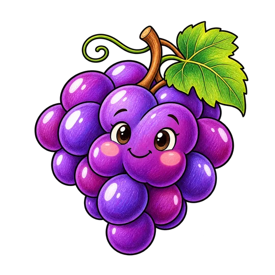

١
حدد عناصر درسك
اكتب: تفاحة، موزة، كمثرى... كل عنصر في سطر. يمكنك اختيار قالب جاهز، أو التحكم في الألوان والملامح والمقاس.
اكتب أسماء العناصر التي تحتاجها في سطور منفصلة، واختر أسلوب الرسم والألوان، واحصل على برومبت جماعي دقيق تطلب به من الذكاء الاصطناعي ملفات صور مستقلة لتستخدمها في PowerPoint والدروس التفاعلية.





المولّد ينظّم طلب الصور، وأداة الذكاء الاصطناعي تنشئها، وPowerPoint يساعدك على تحريكها.
اكتب: تفاحة، موزة، كمثرى... كل عنصر في سطر. يمكنك اختيار قالب جاهز، أو التحكم في الألوان والملامح والمقاس.
اضغط «نسخ البرومبت»، ثم أرسله لأداة صور تدعم إخراج صور منفصلة. يوجد خيار لتوليد عنصر واحد عند الحاجة.
بعد تنزيل الصور، أدرجها في PowerPoint أو في أدواتك التعليمية، ورتبها على الشرائح وحرّكها بالطريقة التي تناسب شرحك.
كل الأدوات تركز على صياغة برومبتات مستقلة وواضحة، لا على تحرير الصور داخل الصفحة.
قائمة مرقمة تحفظ الأسماء العربية كما هي، وقواعد تمنع دمج الصور أو استبدال العناصر.
أبيض وأسود، لون إبراز واحد، ألوان هادئة، وألوان مبهجة مناسبة للأطفال.
الأبيض والأسود، الألوان التعليمية، وإعدادات جاهزة للشخصيات.
الابتسامة، العينان، زاوية الرسم، الوضعية، والوجوه الكرتونية للأشياء.
PNG أو SVG عند دعم أداة الصور، مع هوامش آمنة وصور منفصلة.
اسم مجموعة اختياري مع حفظ محلي بسيط، وبرومبت جماعي وآخر لعنصر واحد. لا حاجة إلى إنشاء مشاهد أو إدارة ملفات.
النسخة المستقرة 2.4.1: اكتب أسماء العناصر، واختر شكلها، وانسخ برومبتًا يطلب صورًا مستقلة دون فرض أسماء ملفات أو إنشاء مشاهد. تنظيم المجموعات اختياري ومحلي. تبقى خيارات PNG وSVG واللون والتعبير الفني متاحة، بينما تصنع الصور أداة الذكاء الاصطناعي الخارجية.
أمثلة من اختبار حقيقي لبرومبت جماعي ملوّن: كل صورة تمثل عنصرًا مستقلًا بخلفية شفافة.
أداة مجانية ومفتوحة المصدر — ابدأ من متصفحك دون حساب أو تنزيل برامج إضافية.